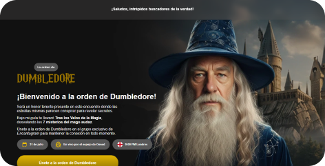

Sobre el Proyecto
Este proyecto personal se centra en la creación de una interfaz inmersiva inspirada en el universo de Harry Potter, específicamente en el personaje de Albus Dumbledore. El objetivo fue experimentar con transiciones suaves, efectos de iluminación mágica y una tipografía que evocara la sabiduría y el misterio.
Características clave
- Efectos de resplandor (glow) dinámicos.
- Navegación fluida inspirada en elementos de fantasía.
- Paleta de colores curada para transmitir misticismo.
- Optimización de imágenes WebP para carga ultra rápida.
Proceso de Desarrollo
Se comenzó con un prototipo en Figma para definir la jerarquía visual. La implementación se realizó con HTML5 semántico y CSS3 puro, utilizando variables para gestionar la consistencia de los efectos visuales.